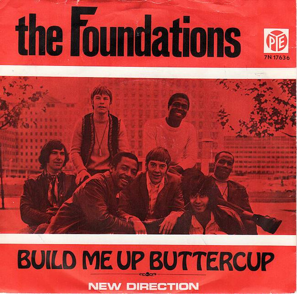
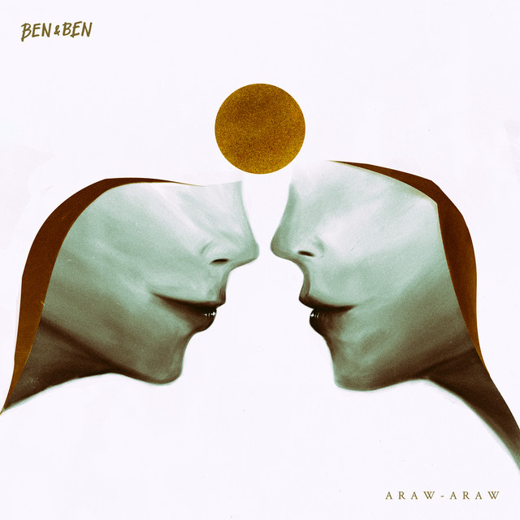

Top 1
"How Deep Is Your Love" is a pop ballad written and recorded by the Bee Gees in 1977 and released as a single in September of that year.
Top 2
 "Build Me Up Buttercup" is a song written by Mike d'Abo and Tony Macaulay, and released by The Foundations in 1968 with Colin Young singing lead vocals.
Top 3
"Growl" is a song recorded by South Korean–Chinese boy band Exo, released on August 5, 2013, for the repackaged edition of their first studio album Growl.
Top 4
" More Than Words " is a song by American rock band Extreme. It is the fifth track and third single from their 1990 album Pornograffitti.
Top 5
“Sanctuary” is the first single released by Joji following the release of Joji’s debut album, BALLADS 1.
Top 6

"Stay" is a song by South Korean girl group Blackpink, released by YG Entertainment on November 1, 2016, together with "Playing with Fire", as a digital single titled Square Two.
Top 7
2NE1 - Ugly. 2NE1 is the second mini album by 2NE1. It was released on July 28, 2011 with "Ugly" serving as the album's title track.
Top 8
"Miss Independent" is a song by American singer-songwriter Ne-Yo. It is the second single from his album. Year of the Gentleman (2008), and was produced by Stargate.
Top 9

" Night Changes " is a song recorded by English-Irish boy band One Direction. It was written by the band alongside Jamie Scott, Julian Bunetta and John Ryan, while the production was handled by Bunetta and Ryan.
Top 10
 "Araw-Araw" (English: "Everyday") is a song by Filipino folk-pop band Ben&Ben, composed by lead vocalists Miguel Benjamin Guico and Paolo Benjamin Guico.